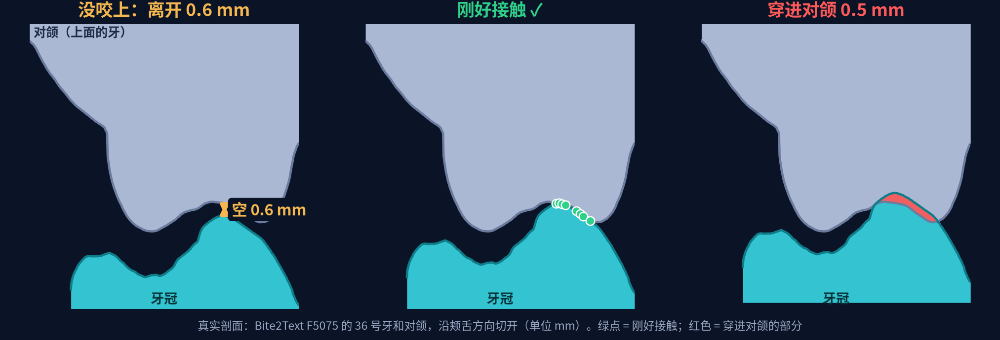

缺牙位置生成一颗牙冠
现状一句话：和对颌、邻牙的距离关系已经接近天然牙，但整体形状不像真牙，咬合面的凹凸也不够。数字好看不等于牙冠好看，下一步先解决形状。
牙冠的上下两半
先看懂指标
评分卡 = 把一颗真牙挖掉，让模型重新生成，再量生成的牙。同一套量法也量天然牙，天然牙的数就是及格线。单位 mm / mm²。 越小越好 越大越好 越接近天然牙越好

| 指标 | 一句话 | 方向 |
|---|---|---|
| 形状误差（Chamfer）/ RMSE / Hausdorff | 和被挖掉的真牙平均差多远 / 大偏差算得更重 / 最差处差多远 | 越小越好 |
| 牙尖 / 中央窝位置偏差 | 生成的“山顶”“谷底”和真牙的差多远 | 越小越好 |
| 牙尖到窝的深度、细节量 | 咬合面起伏多大、细小沟纹多不多；太小 = 牙面太平 | 接近天然牙 |
| 穿入对颌 / 没咬上 的比例 | 多少颗牙冠戳进对面的牙（> 0.1 mm）/ 完全碰不到（间隙 > 0.2 mm） | 越小越好 |
| 咬合接触面积 / 虚拟咬合纸面积 | 离对颌 0.2 mm / 0.1 mm 以内的面积（咬合纸会染色的地方）。太大 = 整片贴死 | 接近天然牙 |
| 邻接有缝 / 挤进邻牙 的比例 | 至少一边没贴上（> 0.15 mm）/ 至少一边挤进邻牙（> 0.15 mm） | 越小越好 |
| 相对邻牙的高度 | 比两边邻牙高（正）还是低（负），看齐不齐 | 接近 0 |
| 深度误差、重合度（训练日志） | 扩散模型在深度图上逐像素差多少 / 轮廓重叠多少，训练中途看趋势用；结论看评分卡 | 误差越小 重合越大 |
天然牙也有 13% “穿入对颌”、20% “挤进邻牙”：是口扫拼合和分割边界的误差（约 ±0.2 mm），所以要和天然牙那一列对着看。 看一次结果：先看形状误差和牙尖 / 窝偏差有没有变差，再看和邻牙、对颌的几个比例，最后看咬合面深度和细节。
新：形状模型出形状，扩散模型补细节（11-14，网页已默认使用）
形状模型整体形状准，但咬合面整片贴着对颌；扩散模型单独用时细节像真牙，但形状偏。把两个接起来： 形状模型先出牙冠 → 投到径向深度图上 → 加噪到第 600 步（共 1000）→ 扩散模型去噪，每一步把低频部分换回形状模型的（只取扩散模型的细节）。不用重新训练。


| 指标（中位数） | 天然牙 | 形状模型 | 形状模型 + 扩散 | 只用扩散（v1） |
|---|---|---|---|---|
| 形状误差 Chamfer | — | 0.279 | 0.272 | 0.37 |
| RMSE / Hausdorff | — | 0.33 / 1.18 | 0.33 / 1.20 | 0.52 / 1.58 |
| 牙尖 / 中央窝位置偏差 | — | 0.83 / 0.84 | 0.84 / 0.86 | 1.18 / 1.80 |
| 牙尖到窝的深度 | 2.00 | 2.02 | 1.98 | 1.70 |
| 相对邻牙的高度 | 0.00 | +0.13 | 0.00 | −0.19 |
| 咬合接触 / 咬合纸面积 mm² | 2.1 / 0.36 | 7.4 / 3.5 | 4.5 / 1.9 | 3.8 / 1.7 |
| 挤进邻牙 / 邻接有缝 | 20% / 6% | 25% / 3.9% | 21% / 3.5% | 22% / 5.7% |
和别家比：CrownFusion 等用扩散模型直接生成牙冠；我们发现单独扩散形状偏（和 CrownFusion 论文里扩散比回归 Chamfer 大一致）， 所以用“回归出形状 + 扩散补细节”（类似 SDEdit 的做法），两边的长处都拿到。下一步：扩散模型接着训（v2 正在训），以及在形状模型的输出上专门训一个补细节的扩散模型。
放在牙弓里看

咬合面：离对颌多远

评分卡

| 还没达标的 | 天然牙 | 现在 |
|---|---|---|
| 咬合接触面积（要求接触时） | 2.1 mm² | 7.4 mm²（贴得太平） |
| 邻接接触面积 | 0.7–0.9 mm² | 0.2 mm²（点接触） |
| 挤进邻牙超过 0.15 mm | 20% | 25% |
| 牙尖位置偏差（中位数；最差 5%） | — | 0.8 mm；3 mm 以上，还会少 1–2 个牙尖 |
| 中央窝位置偏差（中位数） | — | 0.8 mm |
| 贴着对颌 0.1 mm 以内的面积 | 0.36 mm² | 3.5 mm²（一片面贴上去，天然牙是点接触） |
| 整体形状、咬合面凹凸 | 评分卡现有的“起伏”“细节”两项和天然牙数值接近，但肉眼明显不像：这两项指标不够敏感，要换 | |
做法
- 训练数据自己造：从完整牙弓里挖掉一颗牙，让模型补回来。带对颌的数据来自 934 位患者的咬合对齐口扫，牙的范围用自己的分割模型自动标。
- 损失函数：和真牙的表面距离 + 底边对齐牙颈线 + 网格平滑 + 穿进对颌的深度 + 到对颌的最近距离对齐真牙。
- 为什么形状不像：模型是“回归”，同一个缺隙有很多种合理的牙，它学到的是这些牙的平均，轮廓变圆、牙尖窝沟被抹平；模板只有两千多个顶点，也刻不出细节。
这一轮训练的几个模型
| 模型 | 和真牙的距离 | 穿入对颌 > 0.1 mm | 到对颌的最近距离和真牙差 |
|---|---|---|---|
| 原模型（不看对颌） | 0.446 mm | 47% | 0.28 mm |
| 试验 1：只加对颌整体特征 | 0.386 mm | 32% | 0.21 mm |
| 试验 2：试验 1 + 逐顶点修正 | 0.363 mm | 7% | 0.17 mm |
| 试验 3：试验 2 + 最近距离对齐真牙 | 0.389 mm | 17% | 0.13 mm |
| 形状模型（采用）：对颌只取最近一层 | 0.382 mm | 12% | 0.14 mm |
留出的 42 位患者、1375 颗牙，模型直接输出。“穿入”是用对颌的点近似量的，同样量法真牙是 23%，只用来比较模型。试验 2 在表上最好，但放进完整流程后牙冠平均高出 0.64 mm（训练和实际使用时给的对颌范围不一样），形状模型把两边统一后没有这个问题。
和别家比
| 方法 | 任务和数据 | 和参考牙冠的距离 | 穿进对颌的面积 | 咬合面细节 |
|---|---|---|---|---|
| DMC | 预备体牙冠，16 号牙，技师设计 | 0.433 mm | 1.11 mm² | 平滑 |
| VBCD | 同上 | 0.353 mm | 2.36 mm² | — |
| CrownFusion | 同上 | 0.412 mm | 0.61 mm² | 有完整窝沟 |
| 本项目 | 缺失牙，前磨牙和第一磨牙，真牙 | 0.26 mm | 0（调整后） | 平滑 |
前三行来自 CrownFusion 论文的对比表。任务、数据、距离的算法都不同，不能排名，只能看量级。能直接比的做法是把 VBCD（代码已公开）在同一批患者上跑一遍，还没做。已经能确定的差距：窝沟牙尖的细节 CrownFusion 明显更好。